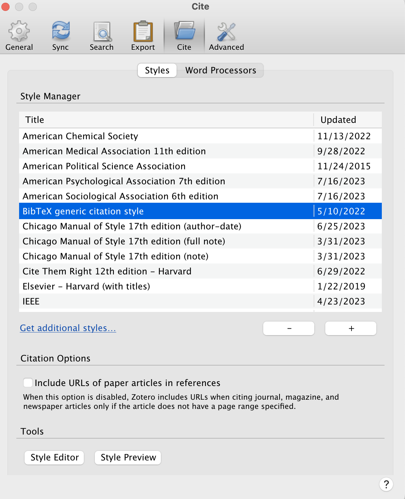

Translating Google Docs to aggiedown LaTeX
In 2018, Ryan Peek created the aggiedown package: “An R Markdown template using the bookdown package for preparing a PhD thesis at the University of California Davis.” This service to the PhD students of UC Davis is incredible – it lets students link their dissertation to a lovely LaTeX format that should, ideally, make your formatting process easy and compliant with the Graduate Studies formatting guidelines. So, I wanted to continue the legacy by keeping the template alive and well (you should too, by following the guide to contributing updates as necessary during use!).
Beyond using the template, I wanted to make my dissertation-writing life as easy as possible by integrating my mode of writing (Google Docs) with the aggiedown template. As it stands, Peek proposes either writing chapters directly into the chapter Rmd files in the package, or knitting from a “child” Rmd that lives inside a specific project. While both of these options are great, working in Google Docs until the very end let me work in edits from my committee up until the last minute, and allowed me to work with my reference manager of choice (Zotero plug-in to Google Docs) instead of dealing much with BibTeX.
So, I created a workflow for converting a Google Doc with Zotero-embedded references into an Rmd document that will play nicely with LaTeX templates. Though I designed this for aggiedown, it is likely tweak-able for other LaTeX templates as well. This tutorial outlines what to do, however, it assumes you have read the aggiedown README file for an understanding of how that package works first.
Pre-requisites
- Skill-level. This workflow is for someone with intermediate coding skills, in part because I didn’t bug-proof the functions very much and so it may require some tweaking. I’d say an ideal candidate is someone who understands what LaTeX is – but doesn’t really know how to use it – and understands Rmd well-enough (e.g. someone who is past the learning curve of spending hours on getting a
kablejust right and hardly ever gets working directory errors anymore).
- Software. Writing in Google Docs and embedding references using Zotero Google Docs plug-in. Please download the BibTex format for Zotero so that you have this option below. Downloads can happen just by navigating Zotero > Settings to the box (below) searching via the ‘Get additional styles…’ link.
aggiedown. Please read theaggiedowndocumentation first, as this tutorial takes for granted a general understanding of the workflow and recommendations made in that package. It builds directly on the recommendations and formatting style of the package.
Set-up
- Writing in Google Docs. The Introduction and each Chapter is a document, so your set-up should look something like this.
- Coding in R Projects. Each chapter has an R project (ideally – though in reality you just need to know the filepaths of all your figures and tables). I’ll leave this to your imagination.
Doing your thing in Google Docs
So, you’re writing your dissertation in a Google Doc. Great. You should use docs as you wish, with only a few things to pay attention to.
Use headers appropriately. Google Docs (like Word) has text related settings where you can set Titles, Header 1, Header 2, etc. These translated well to Markdown, and so we need to make sure we use these in a consistent and compatible way with the dissertation format. Your Chapter Title should be Header 1, and then all main sections (e.g. Introduction, Methods, etc.) should be Header 2. You can continue down to subsections as much as you wish. For references, please make a Header 1 titled ‘References’ at the end of the document.
Chapter marks. To get friendly chapter marks, as advised by Ryan Peek in the
aggiedownguidelines, you can embed this right into the doc (e.g. [backslash]chaptermark {organic seed policy}. Also note that because this is Chapter 1, I have a set-up chunk with the packages I need to read in images and load tables. More on chunks in the next point.
- Code chunks. So, you’ll need to manually insert chunks, which is a trickier part. You can surely paste in your figures and tables and stuff as you write. But towards the end you’ll want to work with the model of inserting chunks into the text instead of the inserting figures and tables. For example, here I am loading in a figure, which is easy to you only need to set your chunk options and load the right path.
Tables are a little trickier. All of my tables are saved as .csv files in my projects, and I have to read them in and do some manual changes to get them right. This means sometimes renaming column names and setting some kable and kableExtra options to get my table just right. Important: be sure to include a colon (;) after each line of code so that eventually the rendering will recognize a line break in the code.
Zotero settings. You can write the dissertation with any citation format you want via Zotero (MLA, APSA, etc.), but when you’re in the end/knitting phase, you’ll want to switchto BibTex format. See above for the directions for downloading and switching the Settings for the Style Manager. Note, in text this options is very ugly, but the heart of the conversion function is making it into something usable, so deal with it.
References. I said it in 1., but it bears repeating. Insert your bibliography under a Header 1 sections called “References”. The spelling a capitalization matters here, so please be conscious of that.
Misc formatting. This conversion will recognize simple markup like bolding and italics, will ignore things like comments in the document, but it will panic a little but over highlighting. Please don’t use highlight markup. To embed links, you can use standard markdown link embedding. For citing page numbers, I have not figured out how to put this into the workflow, so I just do not link these inline citations to Zotero.
R chapter projects
You’ll have to manage your chapters as projects. However you do this, you’ll need to build in a few features.
- For each chapter project, save your figures and tables in sensible places with sensible names. For example, I have a tables and figures directory for each project, and in each of those projects I have just named them by numbers. You can do whatever naming convention you wish, you’ll just need to know the path for later.
- In each chapter project, create a manuscript folder. For example, in this project I have a ch1-manuscript/ directory. This will be a path you use for later, as it is where the functions I’ve made will create your chapter Rmd documents.
aggiedown
You’ll also have a project from following the directions to clone the aggiedown package. A few additions here can help the workflow.
Intro directory. In the
aggiedownproject, create an intro/ directory. This is where your introduction will be rendered from.Script to prep chapters. Create a prep_papers.R script in the main directory. This is where you will call in two functions from my open source function repo, woodshop. These functions are
prep_diss_chaptersandauto_bib.
devtools::install_github('liza-wood/woodshop')
introurl <- 'https://docs.google.com/document/d/1rhGeXrAtk8hdtB1uymg1WwaD_P3Xv3oz_lm1sl4Qnao/edit#'
intropath <- '~/Documents/Davis/R-Projects/aggiedown_dissertation/intro/'
ch1url <- 'https://docs.google.com/document/d/1T9K308unavSzrx7A4ZsXRTScazhfeAVHGT-rtawP1x4/edit'
ch1path <- '~/Documents/Davis/R-Projects/organicseed_adoption/ch1-manuscript/'
ch2url <- 'https://docs.google.com/document/d/1wsDqDBgijoXFMuOlyHa3hSlUwcNLpUWnRna11r8dxzs/edit'
ch2path <- '~/Documents/Davis/R-Projects/osisn_spatial/ch2-manuscript/'
ch3url <- 'https://docs.google.com/document/d/1OWRFWWUNgEmn2VDEcj6bS8uc_lL1VnteS5jK-_YyhII/edit'
ch3path <- '~/Documents/Davis/R-Projects/osisn_processes/ch3-manuscript/'
woodshop::prep_diss_chapters(introurl, intropath, intro = T)
woodshop::prep_diss_chapters(ch1url, ch1path)
woodshop::prep_diss_chapters(ch2url, ch2path)
woodshop::prep_diss_chapters(ch3url, ch3path)
woodshop::auto_bib_file(intropath, ch1path, ch2path, ch3path)
After running this code in the prep_papers.R file, the directories created in each chapter project should fill out.
- Knit children. In each chapter .Rmd built in to the
aggiedownpackage (e.g. 01-chap1.Rmd), you’ll want to set them up so that they knit from the Rmds created in the previous step. In each chapter Rmd, you can mimic the following code chunk to draw it in. This is the only thing you need in each chapter Rmd.
- Final touches. At the very end (i.e. you’re not going to run prep_papers.R any more) you can make any specific manual edits that you’d like by directly editing the chapter’s Rmd in the chapter project. For example, one of the main bugs that I hadn’t solved relates to footnotes. They overwrite one another because they do not get continuously numbered. If you have footnotes, you’ll need to run each chapter Rmd and make the numbers continous, otherwise you’ll have issues.
Once you’ve followed these steps, you should be able to knit from the index.Rmd file in the aggiedown package and render your thesis, stored as thesis.pdf in the book/ directory of the project.
A few pages are below as an example. On page v., the rendering takes all of the first and second headers from the Google Doc into the table of contents. On page 5, you see the chapter title, introduction header, and then that references are embedded and linked to the bibliography, formatted based on how I specified the csl. Then on pages 16 and 19, the figure and table I showed as chunks in text are fitting in the final rendering. Note also that the page header alternatives between chapter mark on even pages (e.g. CHAPTER 1. ORGANIC SEED POLICY) and subsection headers on odd pages (e.g. 3. METHODS).